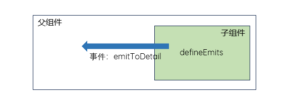
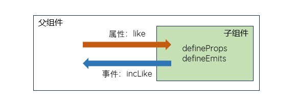

- 通过编译宏 defineEmits() 的形式实现通信|参数传递|数据传递 - 自定义事件
- 更多信息，请访问 Declaring
Emitted Events
- Procedure
-
在 <script setup> 的顶级作用域下，子组件使用 defineEmits() 宏，以 数组
的形式，定义向父组件传递的事件；通常使用变量接收定义的事件列表，以便进一步处理
父组件响应子组件传递的事件并处理
-
为了和普通事件区分，建议加上 emit 前缀
逻辑中推荐使用 camelCase，如：greetingMessage；结构中推荐使用 kebab-case，如：greeting-message
可以直接在子组件结构中，使用专有变量 $emit 发送事件 - 仅限 Vue 环境
- 子组件
-
单击触发自定义事件 handleSuper；无参
<button @click="handleSuper">click me</button>
定义传递事件列表，声明变量 emit 接收，并在自定义事件中传递事件；可以携带参数
//自定义事件
const emit = defineEmits(['emitSuper', 'emitHi'])
//上来就传递了一个自定义的事件
emit('emitHi', 'hi,there.')
//函数表达式中触发声明的自定义事件
const handleSuper = () => {
emit('emitSuper', 'hi,there.')
}
// 具名函数中触发声明的自定义事件
function handleSuper() {
emit('emitSuper')
}
子组件也可以使用内置方法 $emit 传递事件 - built-in $emit method
<button @click="$emit('emitSuper')">click me, no param</button>
<button @click="$emit('emitSuper', 'hi,there.')">click me with param</button>
- 父组件
-
监听事件 emitSuper，并在回调函数中接收并处理参数
<MyComponent @emit-super="callback" />
const callback = (e) => {
console.log('hihihi', e);
}
- [] 权益保护模态框 Guarantee.vue
-
封装组件；使用自定义事件 defineEmits()，单击显示对应的权益模态框
<button @click.stop="handleGuarantee">详情</button>
const emits = defineEmits(['showGuarantee']);
const handleGuarantee = () => {
emits('showGuarantee')
};
商品详情页 DetailsView.vue 引入并使用；这里使用内联事件处理
<Guarantee @show-guarantee="isShowModal = true" />
单击模态框关闭按钮或其它区域，如背景，都可以关闭模态框；模态框是商品详情页 DetailsView.vue 的普通元素
<div class="modal" :class="{ 'show': isShowModal }" @click.self="isShowModal = false">
<button class="btn modal-btn" @click.prevent="isShowModal = false">close</button>
</div>
- [] 改造封装的产品列表组件，单击某个产品，跳转到详情页
-

子组件 - 定义事件并传递产品 id；结构其它内容略
<button class="btn" @click="toDetail(item.id)">详情</button>
const emits = defineEmits(['emitToDetail'])
const toDetail = (id) => {
emits('emitToDetail', id)
}
父组件 - 接收并响应事件；数据略
<List :lists="lists" @emit-to-detail="doDetail"></List>
const doDetail = (e) => {
console.log('hi outer', e);
}
- [] 点赞组件
-
封装点赞组件 → 接收父组件拉取的点赞数 → 单击时，点赞数量加1

子组件 - 定义并接收父组件传递的参数，+1后，通过事件回传给父组件
const props = defineProps({
propLike: Number
})
const emits = defineEmits(['emitInc'])
const incLike = () => {
emits('emitInc', props.propLike + 1)
}
<div @click="incLike"><span class="fa fa-heart"></span> {{ propLike }}</div>
父组件 - 传递参数并响应事件
<Like :propLike="like" @emit-inc="incLike" />
//传递给子组件的数据
let like = ref(0)
//处理子组件传递的事件
const incLike = (e) => {
console.log(e);
like.value = e
}
- [] 搜索组件 - 表单
-
子组件 - Sql.vue
const emits = defineEmits(['emitIpt'])
<input type="text" @input="$emit('emitIpt', $event.target.value)">
<input type="text" @input="(e) => $emit('emitIpt', e.target.value)">
父组件
<Sql @emit-inc="(e) => console.log(e)" />
<Sql @emit-inc="console.log($event)" />